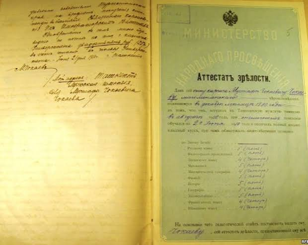
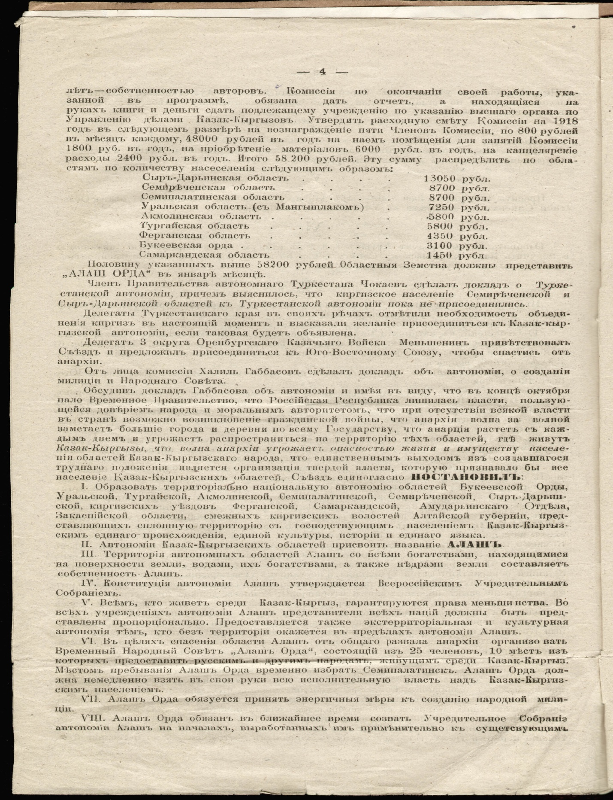
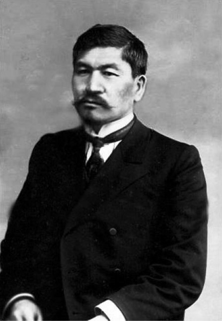
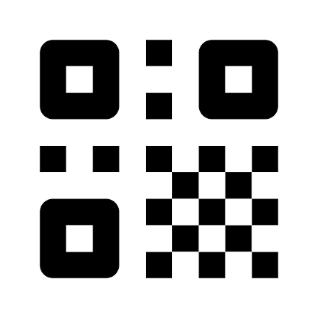
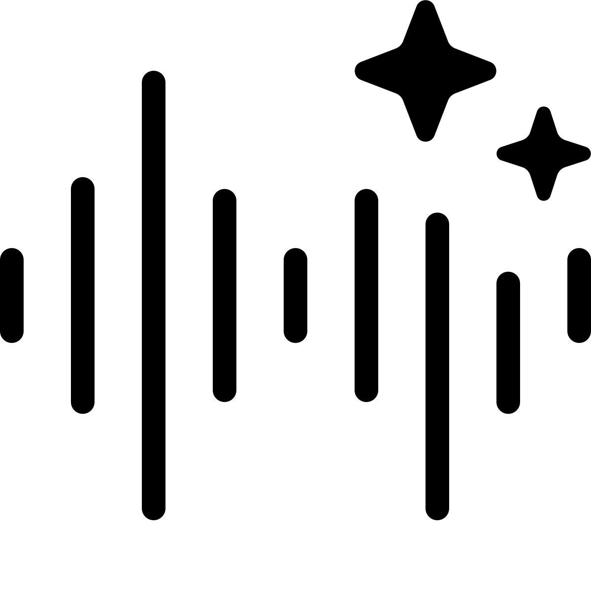

Тарихи дерек — ұрпаққа аманат



Цифрлық құралдар арқылы тарихқа жаңа көзқарас


"Бір халық өзінің тарихын білмесе, бір ел өзінің тарихын жоғалтса, оның артынша өзі де жоғалуға ыңғайлы болып тұрады".
Әлихан Бөкейхан